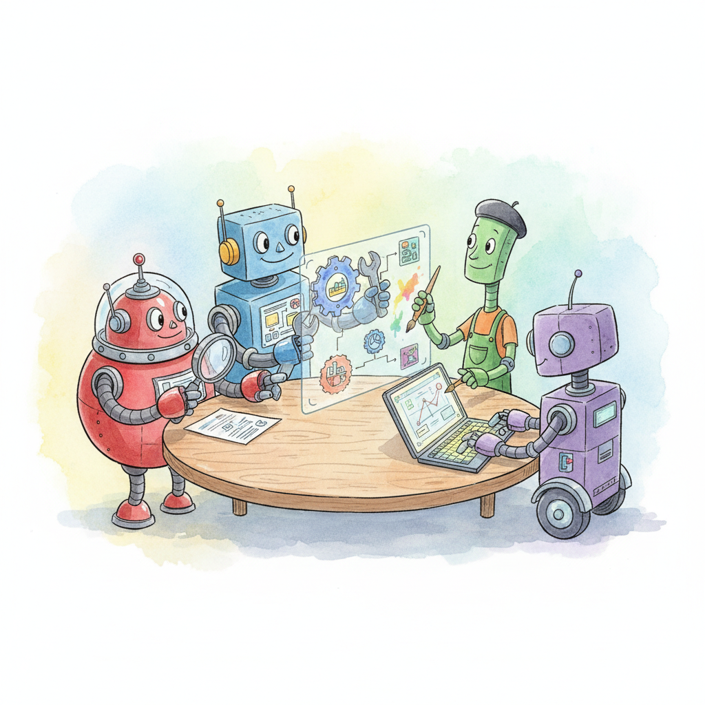

CrewAI: Multi-Agent Orchestration is a high-level multi-agent orchestration framework that models collaborative AI workflows as teams ("crews") of role-based agents. Each agent is defined with a role, goal, and backstory that shape its behavior, and agents are assigned tasks with explicit descriptions, expected outputs, and dependency chains. This role-playing paradigm makes it intuitive to decompose complex problems into specialized subtasks handled by different agents.
The framework supports sequential, hierarchical, and consensual process types. In sequential mode, agents execute tasks in order, passing results forward. In hierarchical mode, a manager agent delegates work and synthesizes results. CrewAI: Multi-Agent Orchestration provides built-in tools for web search, file I/O, and code execution, plus a straightforward interface for custom tool creation. Version 0.80+ introduced Flows for programmatic control, structured output via Pydantic models, and improved memory with short-term, long-term, and entity storage.
This appendix is for developers who want to build multi-agent applications quickly with minimal boilerplate. CrewAI: Multi-Agent Orchestration prioritizes developer experience and rapid prototyping over low-level graph control, making it a natural choice when you know your workflow maps to a team of specialists collaborating on a shared goal.
CrewAI: Multi-Agent Orchestration implements the multi-agent patterns described in Chapter 24 (Multi-Agent Systems), including task delegation, shared context, and hierarchical coordination. The single-agent foundations in Chapter 22 (AI Agents) explain the ReAct and tool-calling patterns that each CrewAI: Multi-Agent Orchestration agent uses internally. For a graph-based alternative with more explicit control flow, see Appendix M (LangGraph).
Read Chapter 22 (AI Agents) to understand tool calling, reasoning loops, and agent memory. Chapter 24 (Multi-Agent Systems) provides the conceptual framework for delegation, coordination, and inter-agent communication that CrewAI: Multi-Agent Orchestration implements. Basic Python and an API key for at least one LLM provider are required to follow along.
Use CrewAI: Multi-Agent Orchestration when your problem naturally decomposes into distinct roles (researcher, writer, reviewer, coder) collaborating on a shared deliverable. It works well for content generation pipelines, research workflows, data analysis teams, and any scenario where you want agents to specialize and hand off results. If you need fine-grained graph control with conditional branching and checkpointing, Appendix M (LangGraph) provides more flexibility. If you need a single agent with tool access, LangChain's agent executor (Appendix L) is simpler.